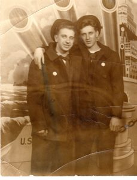
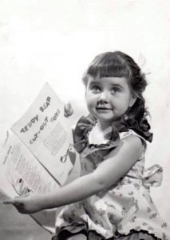

Biografía
Ed & Lorraine Warren
Aunque fallecieron, Ed y Lorraine Warren han sido considerados los expertos más destacados de Estados Unidos en el tema de los espíritus y la demonología. Quizás aún más importante sea el hecho de que durante los últimos 50 años, las autoridades religiosas han recurrido constantemente a Ed & Lorraine para controlar algunos de los brotes más profanos de fenómenos diabólicos en el país. Si no tenías a nadie que te escuchara o te ayudara, recurrías a los Warren.
Sobre ellos
Los Warren dedicaron sus vidas a investigar lo sobrenatural para ayudar a poner en primer plano la comprensión del otro lado y, al mismo tiempo, ayudar a llevar la paz a las familias afectadas. El trabajo que realizaron y los eventos que encontraron son nada menos que notables. Los casos que han documentado, junto con las reliquias y artefactos que han recolectado, se consideran las conexiones más poderosas entre el mundo humano y el mundo espiritual
Ed Warren era un demonólogo. Lorraine Warren era una médium en trance. No eran ocultistas. No eran extraños. Si tuviera el privilegio de hablar con ellos, parecerían personas normales con trabajos regulares. Eran personas comunes y corrientes que realizan un trabajo extraordinario en un campo que la mayoría de la gente teme o no cree.
Las fuerzas que enfrentaron son entidades religiosas que –según ellos mismos admiten– existen con el mero propósito de oponerse a las obras de Dios.
Las fuerzas diabólicas son formidables. Estas fuerzas son eternas y existen hoy. En un mundo que se burla de los fantasmas y de lo inusual, los Warren transmiten un mensaje contrario. Ese mensaje es este: el cuento de hadas es verdad. El diablo existe. Dios existe. Y para nosotros, como personas, nuestro destino depende de cuál elegimos seguir
Linea temporal
Ed y Lorraine se conocen
Cuando Ed tenía 16 años, trabajó como acomodador en “The Colonial Theatre” en Bridgeport, CT, donde Lorraine y su madre eran clientes habituales. Ed se hizo amigo de Lorraine y empezaron a salir.


1944
1945
Ed Warren es desplegado
Ed Warren se alistó en la Marina en su decimoséptimo cumpleaños y estaría desplegado solo durante 4 meses antes de que su barco fuera hundido en el Atlántico Norte.
Ed y Lorraine se casan
Después de que el barco de Ed fuera hundido, regresó al estado con un “permiso de superviviente” de 30 días. Mientras estaban en casa, Ed y Lorraine se casaron y se convirtieron en el Sr. y la Sra. Ed y Lorraine Warren.
Ed regresa y la familia crece
Después de que los Warren se casaron, Ed terminó de servir en la Marina durante la Segunda Guerra Mundial y regresó a casa. Ed y Lorraine tuvieron una hija y la llamaron Judy.

1951
Ed va a la escuela de arte
Ed tenía talento para la pintura y se matriculó en la filial de arte de Yale, la Escuela de Arte Perry. Su pintura representaba en su mayoría casas encantadas en todo Connecticut y otras obras fantasmales
1952
Ed y Lorraine salen a la carretera
Ed se retiró de la escuela después de 2 años y la pareja instaló puestos "emergentes" en las zonas turísticas de Massachusetts, Vermont, Rhode Island y la costa de Connecticut para vender las pinturas de Ed.
Se funda NESPR
El interés de Ed por lo paranormal iba más allá de sus pinturas y dibujos. Cuando escuchaba algún informe sobre una estructura embrujada, él y Lorraine (una escéptica en ese momento) viajaban al sitio para investigar. Ed se paraba en la calle y dibujaba la casa, luego se acercaba a los propietarios con el boceto como un gesto amistoso para ser invitado a la casa. Funcionó. Conforme pasaba el tiempo, Ed y Lorraine fueron obteniendo más y más reconocimiento, fundando así en el año de 1952 la “Sociedad para la Investigación Psíquica de Nueva Inglaterra” (New England Society for Psychic Research, NESPR). Esta fundación fue la primera en dedicarse a la investigación de sucesos paranormales.
Museo de los Warrens
A lo largo de la carrera investigadora de los Warren, Ed y Lorraine recolectaron varios artefactos y reliquias vinculadas a alguna forma de presencia demoníaca. Esos artículos se encuentran en el museo fundado por Ed y Lorraine. Hoy, Tony Spera, quien ha trabajado con Ed & Lorraine durante más de 30 años y todavía investiga activamente la actividad demoníaca, ahora es director de NESPR y curador principal del Museo Oculto Warren ubicado en Monroe, CT.